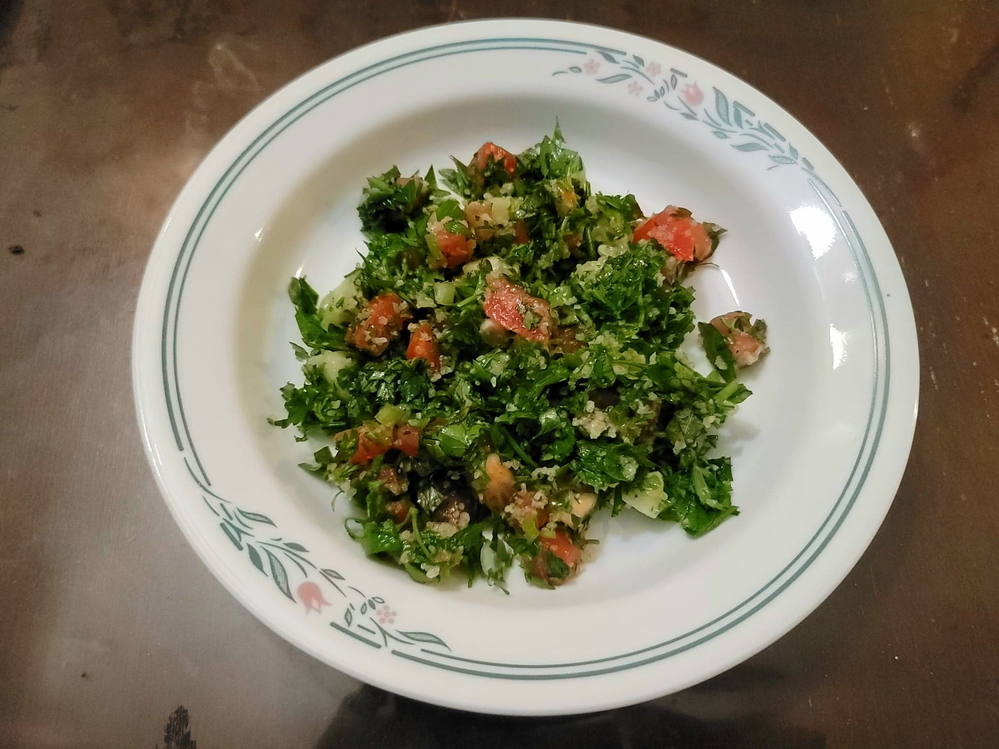

Tabbouleh

Ingredients:
- 1/3 cup Olive oil
- 3 tbsp Lemon juice
- 1/4 cup Fine bulgur
- 2 bunches Parlsey, finely chopped
- 2 Scallions, finely chopped
- 2 medium Tomatoes, diced
- 1/2 English cucumber, diced
- Optional: 1/4 cup Mint, finely chopped
- Salt, to taste
- Black pepper, to taste
Instructions:
- Combine the olive oil and the lemon juice. Then add the bulgur and let soak for at least 15 minutes.
- Combine the parsley, scallions, tomatoes, cucumber, and mint. Add in the bulgur with the olive oil and lemon juice. Toss to combine. Season with salt and pepper to taste.
- Serve immediately.